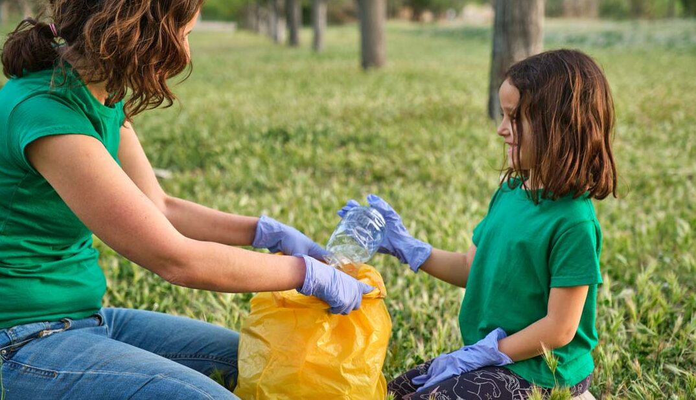

EDUCACION AMBIENTAL
¿Qué Es La Educación Ambiental?
La educación ambiental es el proceso mediante el cual las personas aprenden a conocer, valorar y cuidar el medio ambiente. Su objetivo es crear conciencia sobre los problemas ambientales, como la contaminación, la deforestación o el cambio climático, y promover hábitos responsables que ayuden a proteger la naturaleza.
Esta educación se da en las escuelas, en campañas, talleres, excursiones y actividades comunitarias. Gracias a ella, niños, jóvenes y adultos entienden la importancia de reciclar, ahorrar agua y energía, respetar a los animales y conservar los recursos naturales.
La educación ambiental es clave para formar ciudadanos comprometidos con un planeta sano y un futuro sostenible.

¿Por Qué Es Importante?
La educación ambiental es importante porque nos ayuda a entender cómo funciona la naturaleza y cómo nuestras acciones la afectan. Gracias a ella, aprendemos a cuidar el planeta, a usar los recursos de forma responsable y a reducir la contaminación y el daño ambiental.
También nos enseña a valorar la biodiversidad, a proteger los ecosistemas y a tomar decisiones más sostenibles en nuestra vida diaria. Además, fomenta el respeto por todos los seres vivos y promueve hábitos como reciclar, ahorrar agua y energía, y evitar el uso de plásticos.
En resumen, la educación ambiental forma personas más conscientes, responsables y comprometidas con el futuro del planeta.